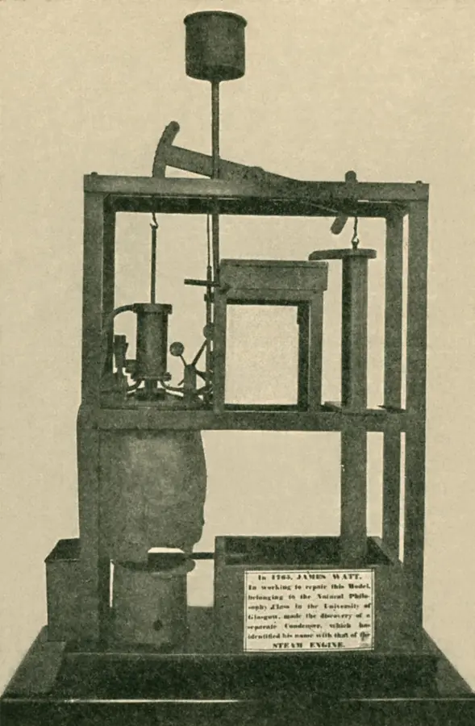

Engineering · Heat & Energy · History of Industry
James Watt and the Steam Engine
James Watt (1736–1819) did not invent the steam engine. Steam engines had been pumping water out of mines for fifty years before he was asked to fix a broken model of one. What Watt worked out was where its fuel was going: about three quarters of the steam was spent reheating cold iron. His fix, a separate condenser, made steam engines use about a quarter as much coal for the same work. That made steam cheap enough for factories, mills, and later railways, and it is one of the reasons graphs of coal use, city growth, and income per person start to curve sharply upward around 1800.
The Problem: Mines Full of Water
By the 1700s Britain was digging deeper for coal, tin, and copper, and the deeper a mine went, the more groundwater flooded it. Horses walking in circles could only pump so much. In 1712 Thomas Newcomen, an ironmonger from Dartmouth, built the first practical answer near Dudley Castle in the English Midlands: an atmospheric engine. It is called that because the air does the pushing, not the steam.
- Fill. Steam from a boiler fills a big upright cylinder under a piston. The heavy pump rods on the far end of a rocking wooden beam pull the piston up.
- Condense. A jet of cold water sprays into the cylinder. The steam turns back into a few spoonfuls of water, leaving a near-vacuum.
- Push. The weight of the air above the open-topped piston (about 10 tonnes on every square metre) shoves it down. The beam rocks, and the pump rods lift water out of the mine.
- Repeat. About twelve times a minute, day and night.
Newcomen engines worked, and hundreds were built. But they ate coal. At a coal mine that hardly mattered, because the fuel was right there. At the tin mines of Cornwall, where coal had to be shipped in, many mines could barely afford to run them.
Engine House Lab: Newcomen vs. Watt
Here are both engines with the same 30-inch cylinder and 7-foot stroke, pumping from a mine 60 m deep. Watch the colour of the cylinder walls: blue is cold, red is 100 °C. Then switch engines and compare where the steam goes.
Where does the steam go?
| To lift 1,000 tonnes of water 60 m | Cold spot | Coal burned |
|---|---|---|
| Newcomen engine | ||
| Watt engine |
- Find the spray temperature that gives Newcomen its best duty
- Get the Watt engine's duty to 18 million or more
- Make Watt use less than a third of Newcomen's coal
Model assumptions: the steam is at 1 atmosphere and 100 °C; what is left after condensing is water vapour at the cold-spot temperature; 80 kJ of heat warms the cylinder's iron skin and piston by 1 °C; the boiler gets 60% of the coal's heat into the water; friction and leaks take 25% of the work, and Watt's air pump another 7%. Those last numbers are set so the results land near the duties engineers measured on real engines in the 1700s. It shows the shape of the problem, not one particular engine.
Newcomen's Dilemma and Watt's Way Out
A Newcomen engine has one cylinder doing two jobs. It has to be hot, so that incoming steam fills it instead of condensing on the walls. It also has to be cold, so that the steam left inside condenses completely and gives a good vacuum. Any temperature you pick is wrong for one of those jobs.
Steam carries a huge amount of hidden heat. That is why a little cold iron wastes so much of it, and why Watt was so careful never to let his cylinder cool.
The chart shows the trade-off. The top line is the push on the piston: the colder the cold spot, the better the vacuum and the harder the air pushes. The bottom lines show duty, the score 18th-century engineers used to compare engines: how many foot-pounds of work an engine did for each bushel (84 lb) of coal. Newcomen's duty peaks at a lukewarm temperature and falls away on both sides. Watt's keeps rising as the condenser gets colder.
Watt's answer, which came to him on a Sunday walk across Glasgow Green in May 1765, was to stop asking one vessel to be hot and cold at once. Let the steam rush out of the hot cylinder into a separate condenser kept in cold water. The cylinder can stay at 100 °C forever, wrapped in a jacket of steam, with its top closed so cold air never touches it. A small air pump worked by the beam clears water and air out of the condenser each stroke.
If the top is closed, what pushes Watt's piston down?
Why not just make Newcomen's walls out of something that doesn't hold heat?
Who Was James Watt?

Painted in 1792 by Carl Frederik von Breda. Behind him is a drawing of one of his engines. Public domain, via Wikimedia Commons.
James Watt was born on January 19, 1736, in Greenock, a port on the River Clyde in Scotland. His father was a shipwright, merchant, and builder who kept a workshop where young James, often too unwell for school, spent hours making models. He went to London at 19 to train as a maker of mathematical instruments (quadrants, compasses, scales) and came home a year later to set up shop at the University of Glasgow as its instrument maker.
The university was full of curious people. The chemist Joseph Black, who had discovered latent heat, became his friend. In the winter of 1763–64, Professor John Anderson asked Watt to repair the university's working model of a Newcomen engine, used in natural philosophy classes. Watt got it running, but it would only manage a few strokes before running out of steam. Rather than just making the boiler bigger, he set out to measure why. He found that the model used several times its cylinder's volume of steam every stroke, and that the cause was the cylinder being chilled and reheated each time. The separate condenser followed in 1765.
Turning the idea into an engine took ten years. Watt's first partner, the industrialist John Roebuck, paid for a patent in 1769 and a test engine, then went bankrupt. Making a cylinder accurate enough to stop steam leaking past the piston was beyond the ironworks of the time. In 1774 Watt moved to Birmingham to join Matthew Boulton, owner of the Soho Manufactory, and the same year John Wilkinson patented a machine for boring cannon that could also bore a large cylinder truly round. In March 1776 the first two Boulton & Watt engines started work, one draining a coal mine near Tipton and one blowing air into Wilkinson's iron furnace. Boulton told a visitor that year, "I sell here, sir, what all the world desires to have: power."
Watt spent the next 25 years improving his engine (see the contributions below), mostly while complaining of headaches and worrying about money. Boulton & Watt didn't usually sell engines outright; mine owners paid a yearly premium of one third of the coal they saved compared with a Newcomen engine. Watt retired in 1800, the year his patent ran out, and spent his last years inventing in an attic workshop at his home, Heathfield, near Birmingham. He died there on August 25, 1819, at 83.
Gallery: From Model to Locomotive
Click any photo to enlarge it, then use the arrow keys to step through the set.



From Savery's Pump to the Railway Age
- 1698 Thomas Savery patents "the Miner's Friend", a steam pump with no piston. It is dangerous and can only lift water a short way.
- 1712 Thomas Newcomen's atmospheric engine starts pumping a coal mine near Dudley Castle.
- 1736 James Watt is born January 19 in Greenock, Scotland.
- 1757 Sets up as mathematical instrument maker to the University of Glasgow.
- 1763–64 Repairs the university's model Newcomen engine and starts measuring why it wastes steam.
- May 1765 The idea of the separate condenser comes to him on a walk across Glasgow Green.
- 1769 Patents "a new method of lessening the consumption of steam and fuel in fire engines", backed by John Roebuck.
- 1774 After Roebuck's bankruptcy, moves to Birmingham to work with Matthew Boulton. John Wilkinson patents his cylinder-boring machine.
- 1776 The first two Boulton & Watt engines go to work, at a coal mine near Tipton and at Wilkinson's ironworks.
- 1781 The sun-and-planet gear turns the beam's rocking into rotation, so engines can drive mills and factories.
- 1782 Patents the double-acting engine (steam pushes on both sides of the piston) and expansive working.
- 1784 Patents parallel motion, the linkage he was proudest of.
- 1788 Fits a centrifugal governor to control engine speed automatically.
- 1800 The patent expires and Watt retires. Boulton & Watt have built roughly 450 engines.
- 1804 Richard Trevithick's high-pressure locomotive hauls iron at Pen-y-darren in Wales.
- 1819 Watt dies August 25 at Heathfield, near Birmingham, at 83.
- 1824 Sadi Carnot asks how much work any heat engine could ever get from heat, starting the science of thermodynamics.
- 1829 Stephenson's Rocket wins the Rainhill Trials.
- 1882 The British Association names the unit of power the watt.
Watt's Key Contributions
Condense the steam somewhere else, so the cylinder never cools. About a quarter of the coal for the same work.
Wrap the cylinder in steam and close its top, so neither the air nor anything else can chill it.
The sun-and-planet gear, worked out with his assistant William Murdoch, let engines turn wheels as well as work pumps: the step that put steam in factories.
Steam pushing on both sides of the piston doubled the power from one cylinder, and a clever linkage kept the piston rod moving in a straight line.
Two spinning balls swing out as the engine speeds up and close the steam valve: one of the first automatic feedback controls on a machine.
To sell engines to people who used horses, Watt defined 1 horsepower as 33,000 foot-pounds of work a minute (about 746 watts).
A pen moved by the steam pressure drew pressure against piston position as the engine ran. The area of that loop is the work done: the first pressure–volume diagram, now in every thermodynamics textbook.
Special ink and damp tissue paper made a copy of a letter, so a busy engineer could keep a record of everything he sent. Offices used the idea for more than a century.
Bending the Curve
Cheap power changes what is worth doing. A Watt engine could drain a mine too deep for horses, blow a hotter blast furnace for more iron, or turn hundreds of spinning machines in a mill that didn't need to sit on a river. Each of those made more coal worth digging, and more coal made steam power cheaper still. Here is Britain's coal output across the 1700s and 1800s:
See the numbers
| Year | Million tonnes |
|---|---|
| 1700 | 3 |
| 1750 | 5 |
| 1775 | 9 |
| 1800 | 15 |
| 1815 | 22 |
| 1830 | 30 |
| 1850 | 60 |
| 1870 | 115 |
| 1890 | 185 |
| 1900 | 225 |
| 1913 | 287 |
Rounded from B. R. Mitchell, British Historical Statistics, and E. A. Wrigley, Energy and the English Industrial Revolution. Figures before 1800 are historians' estimates.
Notice that the curve doesn't jump in 1776. The separate condenser made the curve possible; it took decades of other people's work to bend it. Water wheels still supplied more of Britain's factory power than steam until about the 1830s, and economic historians such as Nicholas Crafts find that steam's biggest boost to the economy came after 1830, with high-pressure engines, railways, and steamships. That is how most big breakthroughs show up on a graph: slowly, then all at once.
The cost: smoke, mines, and the carbon curve
Did Watt's patent speed things up or hold them back?
Watt's Legacy Today
Every light bulb, phone charger and power station is rated in his name. In 1882 the British Association named the unit of power the watt: one joule of energy every second. Car engines are still advertised in his other unit, horsepower.
His engine also started a science. Trying to understand why some steam engines did more work than others for the same fuel, the French engineer Sadi Carnot wrote in 1824 that the work an engine can do depends on the temperature difference between its hot and cold parts. That idea, built on by Clausius and Kelvin, became the laws of thermodynamics. Watt's lesson, to keep the hot side hot and the cold side cold, is still how every power station is designed. Explore it in Thermodynamics and Entropy.
Most of the world's electricity is still made by steam: coal, gas, and nuclear plants all boil water and send the steam through a turbine, and then condense it in a separate condenser.
Sources & Further Reading
- Richard L. Hills, Power from Steam: A History of the Stationary Steam Engine (Cambridge University Press, 1989): Newcomen and Watt engines, duty figures, and Smeaton's 1769 survey
- Ben Marsden, Watt's Perfect Engine: Steam and the Age of Invention (Icon Books, 2002)
- B. R. Mitchell, British Historical Statistics (Cambridge, 1988), and E. A. Wrigley, Energy and the English Industrial Revolution (Cambridge, 2010): coal output
- Nicholas Crafts, "Steam as a General Purpose Technology: A Growth Accounting Perspective," The Economic Journal 114 (2004)
- George Selgin and John L. Turner, "Strong Steam, Weak Patents," Journal of Law and Economics 54 (2011); Michele Boldrin and David K. Levine, Against Intellectual Monopoly (2008), chapter 1
- The Hunterian, University of Glasgow, home of the model Newcomen engine Watt repaired
Photos: Wikimedia Commons; each card links to its source page and license. Related lessons: Henry Ford, Nikola Tesla, Faraday's Law (how steam turbines make electricity), Hot and Cold, and The Ages, where Watt's engine sits on the Grand Timeline.
Practice Problems
Think about steam, heat, and coal.
Easy1. What did Watt add to the Newcomen engine that saved so much coal?
Easy2. In a Newcomen engine, what actually pushes the piston down on the power stroke?
Medium3. Steam gives out 2,257 kJ for every kilogram that condenses. How many kilograms of steam condense while warming cold iron with 4,514 kJ?
Medium4. Newcomen engines averaged a duty of about 5.6 million; early Watt engines about 20 million. About how many times more work did a Watt engine get from the same coal? (one decimal place)
Medium5. A mine's Newcomen engine burned 900 tonnes of coal a year. A Watt engine doing the same pumping burns 300 tonnes. Boulton & Watt charged one third of the coal saved. How many tonnes' worth was the yearly premium?
Challenge6. Watt defined 1 horsepower as 33,000 foot-pounds per minute. How many foot-pounds per second is that?
Challenge7. Chilling a Newcomen cylinder colder makes the push on the piston bigger. Why does it also make the engine waste more coal?